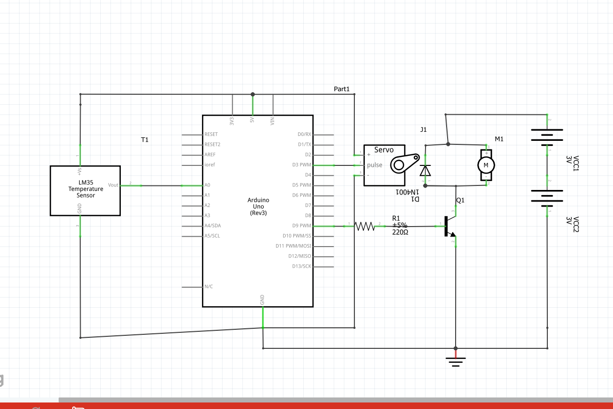
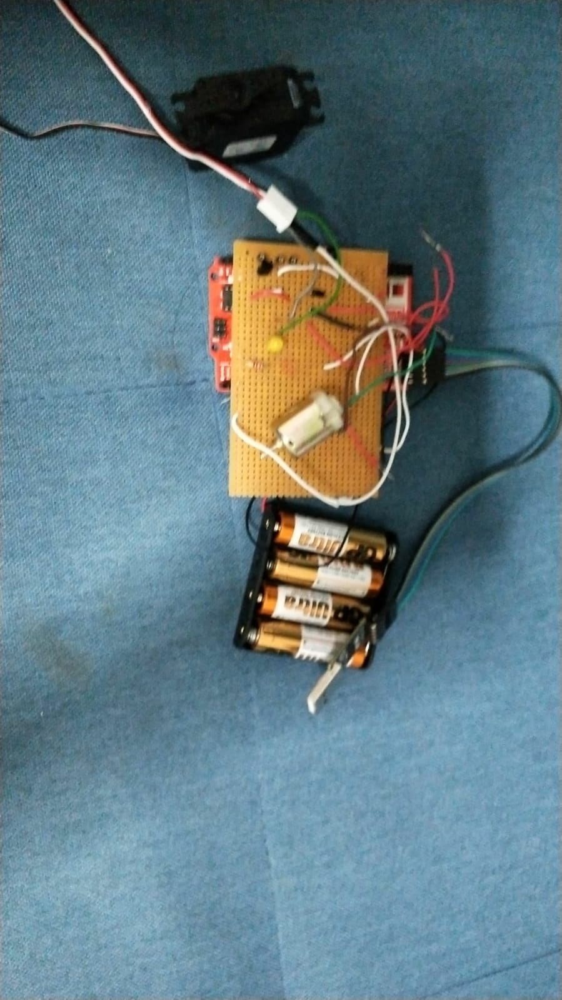

Automatic cooling fan
-
Items to get
This project is useful as Singapore is a humid and hot country. This allows the user to have a peaceful night of sleep. User does not have to wake up to turn off the fan when is too hot and switch off the fan when is too cold.
The skill level for the project is soldering and Arduino programming
Things you need:
1 Breadboard,
1 2N2222 transistor
1 220 Ohms Resistor
1 1N4001 diode
Jumper Wire
1 D.C motor
1.Speeeduino
1.battery holder
4 2A battery
1 stripBoard
1.Servor Moor
Tools and software
Soldering tools
Arduino
-
Build the schematic Diagram on breadboard
Follow the schematic Diagram given.
Firstly connect vout of LM35 to A0 .Connect Gnd of LM35 to Gnd .COnnectt 5v to 5v of the arduino.
Secondly,Connect 220 ohm resistor to PWM pin 9 of Arduino.The resistor is connectetd to the Base of 2n222 transitor
Thirdly,The Emitter of the transitor is connected to the ground.The collector is connected to the diode.
The fourth step is to connect the diode in paralle to the d.c motor.The d.c motor and diode is connected to 6v power supply.
The fifth step , the power supply is connected to the ground
The sixth step is to connect PWM 3 pin to pin2 of the Servo.Pin 1 is connected to 5v and pin 3 is connected to the ground
Explaination
The diode is used to prevent flyback from the D.C motor, hence is connected parallel to the motor.
The D.C motor is connected to the PWM 9 of the Arduino. The transistor is used to control the D.C motor.
The LM 35 is connected to A0. A0 is a analog pin
-
Coding
Code to be used in arduino.
#include
float temp;
int tempPin = A0; //arduino pin used for temperature sensor
int tempMin = 25
; // the temperature to start the buzzerint tempMax = 70;
int fan = 9; // the pin where fan is connected
int fanSpeed = 0;
Servo myservo; // create servo object to control a servo
int pos = 0; // variable to store the servo position
void setup() {
pinMode(fan, OUTPUT);s
pinMode(tempPin, INPUT);
myservo.attach(3);
Serial.begin(9600);
}
void loop() {
temp = analogRead(tempPin);
temp = (temp *5.0*100.0)/1024.0; //calculate the temperature in Celsius
Serial.println(temp);
delay(1000); // delay in between reads for stability
if(temp < tempMin) { // if temp is lower than minimum temp
fanSpeed = 0; // fan is not spinning
digitalWrite(fan, LOW);
}
if((temp >= tempMin) && (temp <= tempMax)){ //if temperature is higher than the minimum range
fanSpeed = map(temp, tempMin, tempMax, 32, 255); // the actual speed of fan
analogWrite(fan, 255); // spin the fan at the fanSpeed speed
for (pos = 0; pos <= 180; pos += 1) { // goes from 0 degrees to 180 degrees
// in steps of 1 degree
myservo.write(pos); // tell servo to go to position in variable 'pos'
delay(15); // waits 15ms for the servo to reach the position
}for (pos = 180; pos >= 0; pos -= 1) { // goes from 180 degrees to 0 degrees
myservo.write(pos); // tell servo to go to position in variable 'pos'
delay(15); // waits 15ms for the servo to reach the position
}
} }
Final product
Solder the components on to the stripboards using the soldeing tools.
The project is done :)
